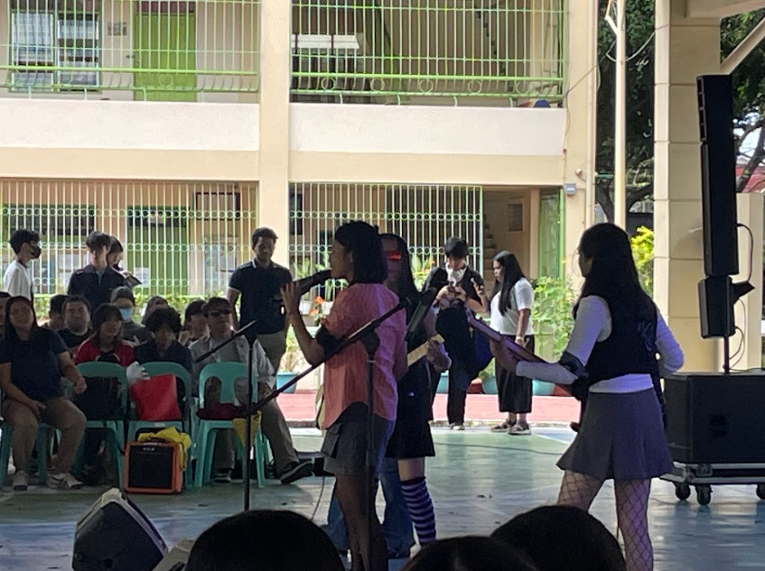
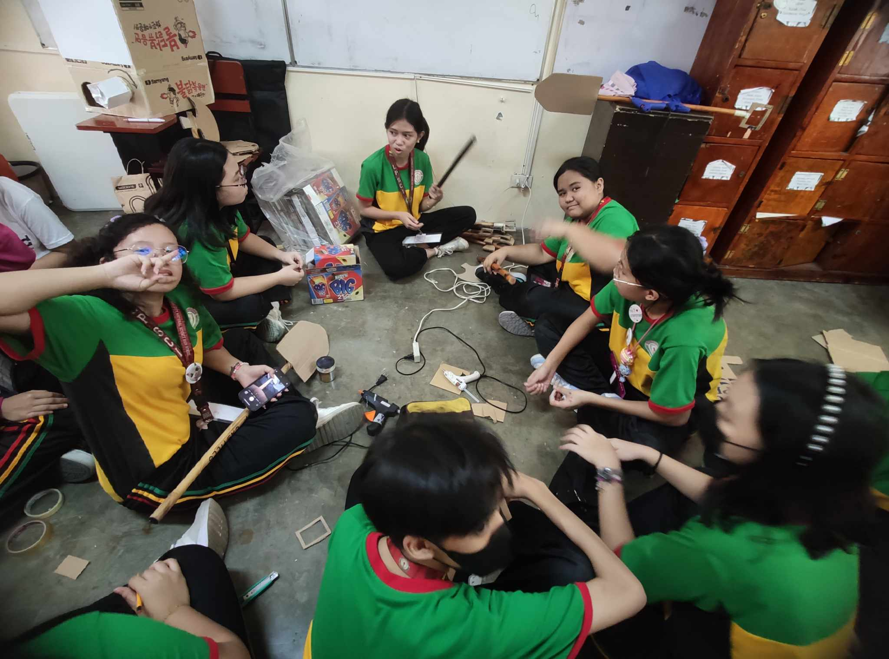

Diary
Below is a diary of entries containing images and videos of our 4th quarter activities
including descriptions of each activity.
| Battle of the Bands BOTB occurred last February 22, 2025. The band in the picture is Six which consists of some of my close friends! They won 4th runner up and i'm really proud of them. |
 |
| One Act Play: Props Making Here we were making shovels and pickaxes for the intro of our play! |
 |